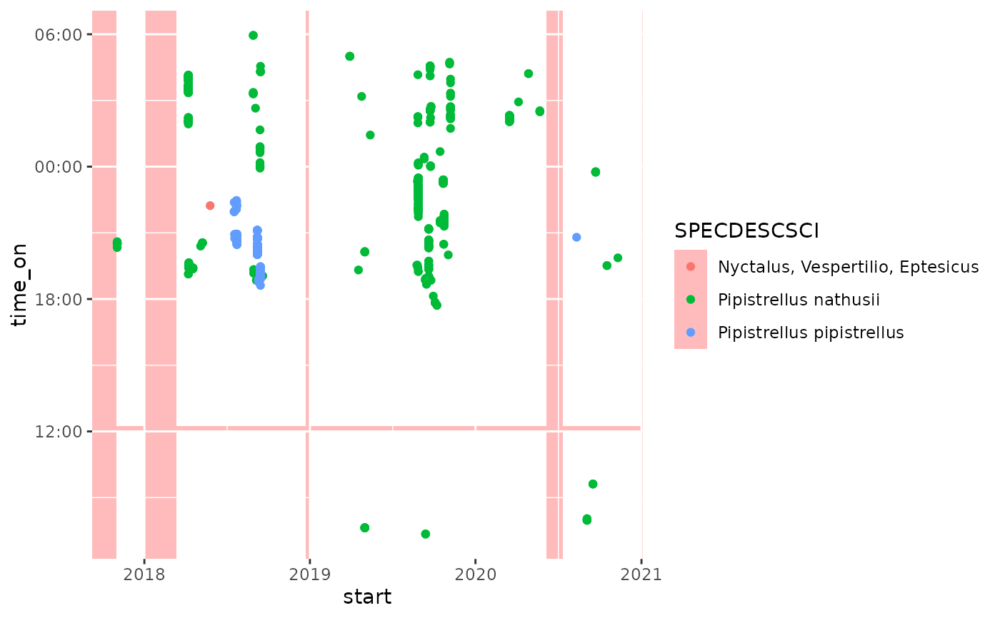

Adds rectangles to a geom_hourglass() plot layer. It can be used to
mark specific periods. The example shows how this annotation can be
used to mark the periods when detector (used for the observations) was active.
Note that this may not work correctly when displaying data that uses
datetime objects with daylight saving time. In those cases you could
split the periods into parts with and without daylight saving. Or convert
your data to a timezone without daylight saving time (e.g. UTC).
Arguments
- mapping
A
ggplot2::aes()object that maps the periods. It needsx,y,xendandyend, which mark the conrners of the rectangles (i.e. periods)- data
A
data.framecontaining information about the periods.- hour_center
The hour at which the time of day is centred. Default is 0, meaning midnight. -12 centres around noon of the preceding day, +12 centres around noon of the next day.
- ...
Passed to layer parameters.
Examples
library(ggplot2)
library(dplyr)
library(lubridate)
## Extract monitoring periods from 'bats' data
monitoring_periods <-
attr(bats, "monitoring") |>
mutate(time_on = as_datetime(time_on),
time_off = as_datetime(time_off))
ggplot(bats, aes(x = RECDATETIME, col = SPECDESCSCI)) +
## Set background to transparent red to contrast with
## monitoring periods
theme(panel.background = element_rect(fill = "#FF000044")) +
## Annotate periods in which the detector was active with
## white rectangles
annotate_periodstates(
aes(x = start, xend = end,
y = time_on, yend = time_off),
monitoring_periods,
fill = "white") +
## plot observations
geom_hourglass(hour_center = -6)
